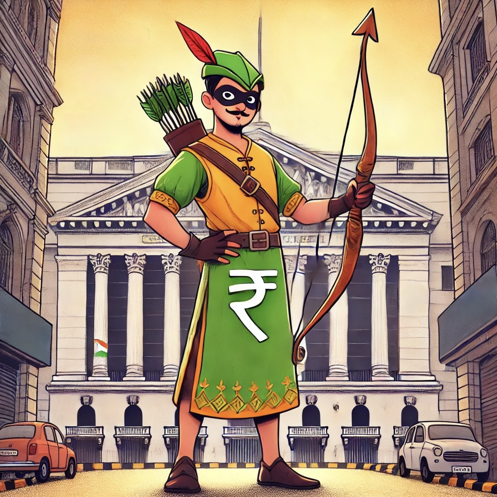

Zerodha: Robinhood in Kurta?
I’ve had the privilege of witnessing the evolution of numerous disruptive companies across global markets. Among these, two firms have particularly caught my attention for their transformative impact on retail investing: Robinhood in the United States and Zerodha in India. While Robinhood has garnered significant global attention, Zerodha has been quietly revolutionizing the Indian stock market, earning it the intriguing moniker “Robinhood in a Kurta.”

Zerodha: Robinhood in Kurta?
This comprehensive analysis will delve deep into Zerodha’s business model, exploring how this Indian fintech powerhouse has disrupted traditional brokerage models and democratized investing for millions of Indians. We’ll examine its similarities and differences with Robinhood, a similar venture from the west, and assess the unique challenges and opportunities presented by the Indian market.
The Genesis of Zerodha
Zerodha’s origin story is a testament to the power of identifying and addressing a market gap with precision and determination. Founded in 2010 by brothers Nithin and Nikhil Kamath in Bangalore, India, Zerodha emerged from Nithin’s firsthand experience as a trader. He recognized a critical need in the Indian financial landscape: a more transparent and cost-effective brokerage service.
The name “Zerodha” itself is a clever portmanteau, combining “Zero” and “Rodha” (Sanskrit for barrier). This naming choice was no accident; it encapsulated the company’s core mission of dismantling the obstacles that had long prevented many Indians from participating in the stock market.
What sets Zerodha apart from many of its global counterparts, including Robinhood, is its funding approach. While Robinhood followed the well-trodden path of venture capital funding typical of Silicon Valley startups, Zerodha took a road less traveled. The Kamath brothers opted for a bootstrapped approach, growing the company organically through its own profits.
This self-funded model has had profound implications for Zerodha’s growth trajectory and corporate culture. By prioritizing sustainable growth and profitability over the rapid expansion often demanded by venture capital investors, Zerodha has built a remarkably stable and profitable business. This approach has allowed the company to focus on long-term value creation rather than chasing short-term growth metrics.
In contrast, Robinhood, founded in 2013 by Baiju Bhatt and Vladimir Tenev, embraced the Silicon Valley startup model. Backed by significant venture capital funding, Robinhood pursued aggressive growth strategies, prioritizing user acquisition and market disruption over immediate profitability. This approach allowed Robinhood to quickly gain market share and mindshare in the U.S., but also led to challenges in terms of regulatory scrutiny and financial sustainability.
In my opinion, Zerodha’s bootstrapped growth model offers valuable lessons for entrepreneurs and business leaders. It demonstrates that even in the capital-intensive world of fintech, it’s possible to build a market-leading company without external funding. This approach can lead to greater control over the company’s direction, reduced pressure for unsustainable growth, and a stronger focus on profitability from day one.
However, it’s important to note that this model also comes with its own set of challenges. Bootstrapped companies often grow more slowly initially and may struggle to compete with well-funded rivals in areas requiring significant capital expenditure, such as marketing or technology infrastructure. Zerodha’s success in overcoming these potential pitfalls is a testament to the strength of its business model and the market need it addresses.
Business Model and Revenue Streams
Zerodha’s business model represents a paradigm shift in the Indian brokerage landscape. At its core, Zerodha operates as a discount broker, but its approach goes beyond simply offering lower fees. The company has reimagined the entire brokerage experience for the digital age, combining cost-effectiveness with technological innovation.
Let’s break down Zerodha’s revenue streams:
Brokerage Charges
- Zero commission on equity delivery trades: This was a game-changer in the Indian market, where traditional brokers typically charged a percentage of the trade value.
- Flat fee of ₹20 or 0.03% (whichever is lower) per order executed on intraday trades across equity, currency, and commodities: This transparent and straightforward pricing model appeals to active traders who may execute multiple trades per day.
- Flat ₹20 per order for options trades: Again, this simplifies costs for options traders, who often faced complex fee structures with traditional brokers.
This pricing model achieves several strategic objectives: * It attracts cost-conscious traders and investors. * It encourages higher trading volumes, as the low, flat fees make multiple trades more economical. * It provides clarity and predictability, enhancing user trust.
Other Revenue Sources
- Interest income from idle cash balances and margin funding: This is a significant revenue stream for Zerodha. By efficiently managing client funds, the company can earn interest on uninvested cash.
- Subscription services for premium tools and platforms: Products like Kite API and Streak for algorithmic trading cater to more sophisticated traders, providing an additional revenue stream and differentiating Zerodha from basic discount brokers.
- Commissions on direct mutual fund investments through its Coin platform: This diversifies Zerodha’s offerings beyond stock trading and taps into the growing mutual fund market in India.
Rebates from Exchanges
Historically, about 10% of Zerodha’s revenue came from exchange rebates for high trading volumes. However, recent regulatory changes mean brokers will no longer earn these rebates going forward. This change highlights the importance of Zerodha’s diversified revenue model and its ability to adapt to regulatory shifts.
Comparing this to Robinhood’s model, we see some key differences. Robinhood relies heavily on payment for order flow (PFOF), a practice where market makers pay brokers for routing customer orders to them. This model allows Robinhood to offer commission-free trading on all trades, not just equity delivery trades like Zerodha. However, PFOF is not allowed in India, which explains the difference in approaches.
Robinhood’s revenue model includes:
- Payment for Order Flow (PFOF): This controversial practice accounts for a significant portion of Robinhood’s revenue.
- Net Interest Income: Similar to Zerodha, Robinhood earns interest on uninvested cash balances and through margin lending.
- Robinhood Gold: A premium subscription service offering features like larger instant deposits and professional research.
- Other Revenue: Including income from cash management features and fees for various services.
While Robinhood’s model has allowed for rapid user growth and completely commission-free trading, it has also attracted regulatory scrutiny and criticism for potential conflicts of interest. Zerodha’s more transparent fee structure, while not entirely free, may provide it with a regulatory advantage and potentially greater customer trust in the long run.
From a strategic perspective, Zerodha’s revenue model offers several advantages:
- Alignment with customer interests: The flat-fee model means Zerodha’s revenues are not directly tied to the size of customer trades, reducing potential conflicts of interest.
- Scalability: The technology-driven, low-cost model allows Zerodha to handle a large number of customers and trades without a proportional increase in costs.
- Flexibility: The diverse revenue streams provide resilience against market fluctuations and regulatory changes.
However, this model also presents challenges:
- Pressure on margins: The low-cost model means Zerodha must operate extremely efficiently to maintain profitability.
- Regulatory risk: As seen with the exchange rebate change, regulatory shifts can significantly impact revenue streams.
- Dependence on volume: The flat-fee model relies on high trading volumes to generate significant revenue, making Zerodha potentially vulnerable to periods of market inactivity.
Technological Innovation and User Experience
In the digital age, technology is not just an enabler but a key differentiator in the financial services sector. Zerodha has recognized this from its inception, placing technological innovation at the heart of its business strategy. This focus has allowed Zerodha to offer a user experience that rivals or exceeds that of many global fintech leaders, including Robinhood.
Let’s examine Zerodha’s key technological innovations:
Kite: This is Zerodha’s flagship trading platform, available on both web and mobile. Kite stands out for its clean, intuitive interface combined with powerful features that cater to both novice and experienced traders. Key features include:
- Real-time streaming quotes
- Advanced charting tools
- One-click trading
- Customizable watchlists
- Integration with third-party tools and APIs
Coin: This platform for direct mutual fund investments is a strategic expansion of Zerodha’s offerings. By allowing users to invest in mutual funds without paying commissions, Coin aligns with Zerodha’s overall philosophy of reducing costs for investors.
Console: This comprehensive portfolio tracking and tax reporting tool addresses a critical need for Indian investors. By simplifying the often complex process of tracking investments and calculating tax liabilities, Console adds significant value to Zerodha’s ecosystem.
Sentinel: This alerts and notifications system for price movements and corporate actions keeps users informed about their investments. It’s a prime example of how Zerodha uses technology to empower its users with timely information.
Kite Connect API: By offering an API, Zerodha has opened up its platform to third-party developers, fostering an ecosystem of additional tools and services. This not only adds value for users but also positions Zerodha as a platform rather than just a service.
From a user experience perspective, Zerodha has made several innovative choices:
“Nudge” feature: This tool discourages over-trading by alerting users when they’re trading too frequently. It’s a responsible approach that prioritizes user welfare over short-term profits.
“Kill Switch”: This feature allows users to temporarily block themselves from trading, helping them avoid impulsive decisions during volatile market conditions.
Minimal design: Unlike some competitors who clutter their interfaces with excessive information, Zerodha opts for a clean, minimal design that reduces cognitive load for users.
Comparing this to Robinhood’s technological approach, we see some interesting contrasts:
Mobile-first design: Robinhood’s app is renowned for its sleek, user-friendly interface that made stock trading feel accessible and even fun for a new generation of investors.
Gamification elements: Robinhood has been criticized for incorporating game-like elements that may encourage excessive trading. This is in stark contrast to Zerodha’s “Nudge” feature.
Cryptocurrency integration: Robinhood offers seamless cryptocurrency trading alongside stocks, which Zerodha does not currently provide.
Fractional shares: Robinhood allows users to buy fractional shares of expensive stocks, a feature not currently offered by Zerodha.
While both companies have leveraged technology to disrupt traditional brokerage models, their approaches reflect their different philosophies and target markets. Robinhood’s focus on simplicity and engagement has been highly effective in attracting younger, less experienced investors in the U.S. market. However, it has also led to concerns about encouraging risky trading behaviors.
Zerodha, on the other hand, seems to have struck a balance between user-friendliness and providing professional-grade tools. Its approach appears more focused on empowering users to make informed decisions rather than simply making trading easy or entertaining.
Zerodha’s technological approach offers several strategic advantages:
Differentiation: In a market where many brokers offer similar services, Zerodha’s superior technology and user experience set it apart.
Scalability: The robust, API-driven architecture allows Zerodha to handle large volumes of trades and users without a proportional increase in costs.
User retention: By offering a suite of integrated tools (Kite, Coin, Console, Sentinel), Zerodha increases switching costs for users, promoting loyalty.
Adaptability: The modular nature of Zerodha’s technology stack allows it to quickly adapt to market changes and user needs.
However, this technology-first approach also comes with challenges:
Continuous innovation: To maintain its edge, Zerodha must continuously innovate, which requires significant ongoing investment in R&D.
Technical debt: Rapid innovation can sometimes lead to accumulation of technical debt, which may need to be addressed in the future.
User education: Advanced features require user education, which Zerodha addresses through its various educational initiatives.
Market Impact and User Base
Zerodha’s impact on the Indian stock market has been nothing short of revolutionary. To fully appreciate this impact, we need to understand the context of the Indian financial market before Zerodha’s entry.
Historically, stock market participation in India was low compared to many developed markets. This was due to several factors:
- High costs of trading
- Complexity of opening and maintaining a trading account
- Lack of user-friendly platforms
- Limited financial literacy among the general population
Zerodha has played a significant role in addressing each of these barriers:
- As of 2024, Zerodha serves over 12 million clients. This represents a significant portion of India’s active retail investor base.
- The company handles over 20% of India’s daily trading volume. This statistic is particularly impressive given that Zerodha achieved this market share in just over a decade.
- Zerodha has been consistently profitable, with revenues of ₹8,320 crore and profits of ₹4,700 crore in FY2024. This financial success demonstrates the viability of its low-cost, technology-driven model.
- Its success has spawned numerous other discount brokers in India, transforming the country’s brokerage landscape. This has led to increased competition and further reduction in costs for retail investors across the board.
The impact of these numbers goes beyond mere market share. Zerodha has played a crucial role in democratizing stock market participation in India. By lowering costs and simplifying the trading process, it has made investing accessible to a much broader segment of the Indian population.
Moreover, Zerodha’s success has forced traditional brokers to adapt. Many have had to lower their fees and improve their technological offerings to remain competitive. This has benefited Indian investors across the board, not just Zerodha’s direct customers.
From a macroeconomic perspective, increased retail participation in the stock market can have several positive effects:
- It can lead to better capital allocation in the economy, as more companies can access public markets for funding.
- It can help individuals build long-term wealth, particularly important in a country like India where pension coverage is limited.
- It can increase financial literacy among the general population, as more people become engaged with financial markets.
Comparing Zerodha’s market impact to Robinhood’s in the U.S., we see some interesting parallels and differences:
User base: As of 2024, Robinhood has over 23 million funded accounts, compared to Zerodha’s 12 million. However, given the differences in market size and maturity between the U.S. and India, Zerodha’s numbers are impressive.
Market disruption: Both companies have significantly increased retail participation in their respective markets and forced traditional brokers to adapt their models.
Profitability: Zerodha has been consistently profitable for years, while Robinhood has struggled with profitability. This difference highlights the potential sustainability challenges of the PFOF-reliant model.
Market impact: While Robinhood disrupted an already well-developed retail investing market in the U.S., Zerodha has played a key role in developing retail investing culture in India. This could be seen as a more transformative impact.
User demographics: Both companies have a strong appeal to younger investors.
From a strategic perspective, Zerodha’s market position offers several advantages:
Network effects: As more users join the platform, it becomes more valuable for all users.
Data advantage: Access to valuable data for product development.
Brand recognition: Being synonymous with low-cost broking in India.
However, this market leadership also presents challenges:
- Increased regulatory scrutiny.
- Being a target for competition.
- Pressure to continually innovate.
In conclusion, while both Zerodha and Robinhood have significantly impacted their respective markets, Zerodha’s approach appears to be more sustainable and aligned with long-term market development in India. Its focus on education, responsible trading practices, and transparent pricing model positions it well for continued growth and influence in the Indian financial landscape.
Financial Education and User Empowerment
One of the most striking aspects of Zerodha’s business model, particularly when compared to Robinhood, is its strong emphasis on financial education and user empowerment. This focus is not just a corporate social responsibility initiative, but a core part of Zerodha’s business strategy.
Let’s examine Zerodha’s key educational initiatives:
Varsity: This is an extensive, free online learning module covering various aspects of finance and trading. Varsity goes beyond basic investing concepts to cover advanced topics like technical analysis, fundamental analysis, and even coding for trading algorithms. The content is presented in an accessible, jargon-free manner, making it valuable for both beginners and experienced traders.
Trading Q&A: This platform allows users to ask questions and get answers from experienced traders and Zerodha staff. It creates a community of learners and experts, fostering knowledge sharing and peer-to-peer learning.
YouTube Channel: Zerodha produces regular educational content in multiple Indian languages. This multilingual approach is crucial in a diverse country like India, where English is not the first language for many potential investors.
TradingQ&A: This gamified app helps users learn trading concepts through quizzes and challenges. By making learning interactive and enjoyable, Zerodha increases engagement and knowledge retention.
Z-Connect: This blog provides updates on product features, market insights, and educational content. It serves as a direct communication channel between Zerodha and its users.
From a strategic perspective, this focus on education serves several purposes:
- User Acquisition: By providing high-quality, free educational content, Zerodha attracts potential customers who are interested in learning about investing.
- User Retention: Educated users are more likely to become long-term, successful investors, reducing churn and increasing lifetime value.
- Risk Management: By promoting responsible trading practices, Zerodha potentially reduces the risk of user losses, which could lead to account closures or regulatory scrutiny.
- Brand Building: The educational initiatives position Zerodha as a trusted advisor, not just a trading platform. This builds brand loyalty and positive word-of-mouth.
- Market Expansion: By educating the public about investing, Zerodha is effectively expanding its potential market.
Comparing this approach to Robinhood’s, we see a stark contrast. While Robinhood has faced criticism for potentially encouraging risky trading behaviors through its gamified interface, Zerodha has taken a more responsible approach. Robinhood’s educational offerings, such as “Robinhood Learn” and “Robinhood Snacks,” are less comprehensive and integrated into the user experience compared to Zerodha’s initiatives.
Robinhood’s approach has been:
- More focused on simplifying investing concepts, sometimes at the expense of depth.
- Less integrated with the trading experience.
- More centered on quick, digestible content rather than comprehensive learning modules.
By prioritizing education and responsible trading, Zerodha is playing a long game, potentially sacrificing short-term trading volume for long-term user success and loyalty. This approach aligns well with the needs of the Indian market, where financial literacy levels are generally lower than in the U.S., and there’s a greater need for foundational education.
However, Zerodha’s educational approach also presents challenges:
- Cost: Producing high-quality educational content is resource-intensive.
- Balancing depth with accessibility: Ensuring that content is comprehensive yet not overwhelming for beginners.
- Keeping content up-to-date: The financial world is dynamic, requiring constant updates to educational materials.
Despite these challenges, Zerodha’s commitment to education appears to be paying off in terms of user trust and market position. It sets a standard for responsible fintech practices that other companies, including those in more developed markets, could learn from.
Regulatory Challenges and Compliance
The regulatory landscape is a critical factor in shaping the operations and strategies of fintech companies. Both Zerodha and Robinhood have faced regulatory challenges, but the nature and intensity of these challenges differ significantly due to the distinct regulatory environments in India and the United States.
Zerodha’s Regulatory Landscape
Zerodha operates in a highly regulated Indian financial market, overseen primarily by the Securities and Exchange Board of India (SEBI). Key aspects of Zerodha’s regulatory environment include:
Strict KYC Norms: Indian regulations require thorough Know Your Customer (KYC) processes, which Zerodha has integrated into its digital onboarding system.
No Payment for Order Flow: Unlike in the U.S., payment for order flow is not permitted in India, which has shaped Zerodha’s revenue model differently from Robinhood’s.
Margin Trading Regulations: SEBI has implemented strict rules on margin trading, including peak margin reporting and penalties for non-compliance.
Investor Protection Measures: Regulations mandate clear risk disclosures and impose limits on certain high-risk trading activities for retail investors.
Zerodha has generally maintained a strong focus on regulatory compliance from its inception. Its straightforward fee structure and emphasis on user education have helped it avoid many of the controversies faced by some of its global counterparts.
However, Zerodha is not immune to regulatory challenges. Recent changes by SEBI, such as new rules for index derivatives and increased Securities Transaction Tax, pose challenges to Zerodha’s revenue model. These are industry-wide issues rather than company-specific problems, but they require Zerodha to adapt its business model.
Robinhood’s Regulatory Challenges
In contrast, Robinhood has faced more intense regulatory scrutiny in the United States:
Payment for Order Flow Controversy: Robinhood’s primary revenue source, PFOF, has been under intense scrutiny from the SEC, with ongoing debates about whether it truly benefits retail investors.
Gamification Concerns: Regulators have expressed concerns about Robinhood’s app design potentially encouraging excessive trading among inexperienced investors.
Trading Restrictions: Robinhood faced backlash and legal challenges for restricting trading on certain stocks during the GameStop frenzy in 2021.
Fines and Settlements: In 2020, Robinhood paid a $65 million fine to the SEC for misleading customers about its revenue sources and failing to satisfy its duty of best execution.
The contrast in regulatory experiences reflects the different approaches taken by these companies and the regulatory environments in which they operate. Robinhood’s aggressive growth and controversial practices have led to significant regulatory pushback, while Zerodha’s more conservative approach has helped it navigate the regulatory landscape more smoothly.
Strategic Implications
From a strategic perspective, the regulatory environment has several implications for both companies:
Product Development: Regulatory considerations heavily influence the types of products and features that can be offered. Zerodha’s inability to offer fractional shares, for instance, is partly due to regulatory constraints.
Revenue Model: Regulations directly impact how these companies can generate revenue. The prohibition of PFOF in India has led Zerodha to develop a different revenue model from Robinhood.
User Experience: Regulatory requirements around risk disclosures, KYC processes, and trading limits all impact the user experience.
Compliance Costs: Both companies must invest significantly in compliance infrastructure and personnel to meet regulatory requirements.
Market Expansion: Regulatory differences between countries pose challenges for international expansion. This is particularly relevant as both companies consider growth beyond their home markets.
Looking ahead, both Zerodha and Robinhood will need to continue adapting to evolving regulatory landscapes. For Zerodha, this may mean finding new revenue streams as traditional sources like exchange rebates are impacted by regulatory changes. For Robinhood, addressing regulatory concerns around PFOF and gamification will be crucial for long-term sustainability.
The ability to navigate complex regulatory environments while still innovating and growing will be a key determinant of success for both companies in the coming years. Zerodha’s more conservative approach may provide it with an advantage in this regard, potentially offering a model for sustainable growth in highly regulated financial markets.
Future Outlook and Challenges
As Zerodha and Robinhood look to the future, both companies face a range of opportunities and challenges. Their ability to navigate these will be crucial in determining their long-term success and impact on the financial services landscape.
Zerodha’s Future Prospects
Zerodha’s future outlook is shaped by several factors:
Market Expansion: While Zerodha has achieved significant market share in India, there’s still room for growth. The company could potentially expand its user base by targeting underserved segments of the population or exploring international markets.
Product Diversification: Zerodha may look to expand its product offerings beyond stock trading and mutual funds. Potential areas could include:
- Cryptocurrency trading (subject to regulatory approval)
- Robo-advisory services
- Personal finance management tools
- Insurance products
Technological Innovation: Continuing to lead in technological innovation will be crucial. This could involve:
- Enhanced AI and machine learning capabilities for personalized user experiences
- Improved data analytics for better decision-making tools
- Blockchain integration for more efficient and transparent processes
Regulatory Adaptation: As regulations evolve, Zerodha will need to continually adapt its business model. This may involve finding new revenue streams to replace those impacted by regulatory changes.
Financial Education: Expanding and enhancing its educational initiatives could help Zerodha further differentiate itself and contribute to growing the overall market for financial services in India.
Challenges for Zerodha include:
- Increased competition from both traditional financial institutions and new fintech entrants
- Potential regulatory changes that could impact its business model
- Maintaining its technological edge while managing the costs of continuous innovation
- Balancing growth with its commitment to responsible investing practices
Robinhood’s Path Forward
Robinhood’s future involves navigating a different set of opportunities and challenges:
Regulatory Scrutiny: Addressing ongoing regulatory concerns, particularly around payment for order flow and gamification, will be crucial for Robinhood’s long-term sustainability.
Diversification: Robinhood may need to diversify its revenue streams to reduce reliance on PFOF. This could involve:
- Expanding its cryptocurrency offerings
- Developing more premium features for Robinhood Gold
- Exploring international markets (though this comes with its own regulatory challenges)
User Education: Enhancing its educational offerings could help Robinhood address criticisms about encouraging risky trading behaviors among inexperienced investors.
Profitability: After struggling with profitability, Robinhood will need to focus on sustainable growth and cost management.
Competition: With traditional brokers now offering commission-free trading, Robinhood needs to find new ways to differentiate itself.
Challenges for Robinhood include:
- Potential regulatory changes that could significantly impact its business model
- Rebuilding trust with users and regulators following controversies
- Competing with well-established financial institutions that have adopted similar fee structures
- Balancing user growth with responsible investing practices
Comparative Analysis
While both companies face challenges, Zerodha appears to be in a stronger position for sustainable long-term growth. Its profitable business model, focus on user education, and relatively smooth regulatory relationships provide a solid foundation for future expansion.
Robinhood, while having achieved rapid growth and market disruption, faces more significant challenges in terms of regulatory scrutiny and achieving consistent profitability. Its future success will largely depend on its ability to address these issues while maintaining its appeal to younger investors.
Both companies will need to continue innovating to stay ahead in the rapidly evolving fintech landscape. The ability to adapt to changing user needs, regulatory requirements, and technological advancements will be key to their future success.
Conclusion: Lessons from the Zerodha Model
As we conclude our analysis of Zerodha and its comparison with Robinhood, several key lessons emerge that could be valuable for fintech companies, investors, and regulators worldwide.
Sustainable Growth Over Rapid Expansion: Zerodha’s bootstrapped, profitability-focused approach contrasts sharply with the venture-backed, growth-at-all-costs model often seen in the tech world. Its success demonstrates that sustainable, organic growth can be a viable strategy even in the fast-paced fintech sector.
User Education as a Competitive Advantage: Zerodha’s strong emphasis on financial education not only helps in user acquisition and retention but also positions the company as a responsible player in the financial ecosystem. This approach could be particularly valuable in markets with low financial literacy.
Technology as an Enabler, Not Just a Disruptor: While both Zerodha and Robinhood use technology to disrupt traditional finance, Zerodha’s approach focuses more on empowering users with professional-grade tools rather than simply making trading easy or entertaining. This strategy may lead to more informed and potentially more successful investors in the long run.
Regulatory Compliance as a Core Strategy: Zerodha’s proactive approach to regulatory compliance, while potentially limiting short-term growth, has allowed it to build a more stable and trusted platform in the long term. This contrasts with Robinhood’s more confrontational relationship with regulators.
Market-Specific Approaches: The differences between Zerodha and Robinhood highlight the importance of tailoring fintech solutions to specific market conditions, regulatory environments, and cultural contexts.
Balancing Accessibility with Responsibility: Both companies have made investing more accessible, but Zerodha’s focus on responsible trading practices (like the “Nudge” feature) offers a model for balancing increased market participation with investor protection.
Diversified Revenue Streams: Zerodha’s multiple revenue sources provide resilience against regulatory changes and market fluctuations, a lesson that could be valuable for other fintech companies relying heavily on a single revenue model.
In essence, Zerodha’s journey from a bootstrapped startup to India’s largest retail broker offers a compelling alternative to the high-growth, high-burn model often associated with fintech unicorns. Its success suggests that it’s possible to democratize finance while also prioritizing user education, responsible practices, and sustainable business models.
As the global fintech landscape continues to evolve, the contrasting approaches of Zerodha and Robinhood provide valuable case studies for entrepreneurs, investors, and regulators. They demonstrate that there’s no one-size-fits-all approach to disrupting financial services, and that the most successful models will likely be those that balance innovation with responsibility, and growth with sustainability.
The “Robinhood in a Kurta” moniker, while catchy, perhaps undersells Zerodha’s unique approach. Rather than simply being an Indian version of Robinhood, Zerodha has charted its own course, one that may offer valuable lessons for fintech companies around the world. As we look to the future of financial services, companies that can blend technological innovation with financial responsibility and user empowerment, as Zerodha has done, are likely to be the ones that make a lasting impact on the industry and on the financial well-being of their users.